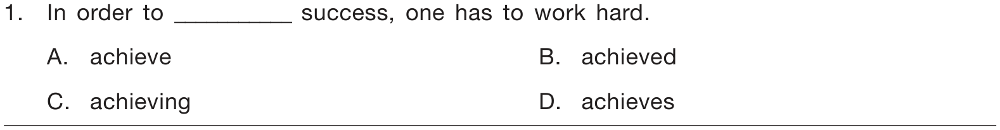
In order to ___________ success, one has to work hard.
achieve
achieved
achieving
achieves
The suitable verb to be followed by the preposition “to” is “achieve” in the sentence because with “to” the base (first) form of the verb is used.
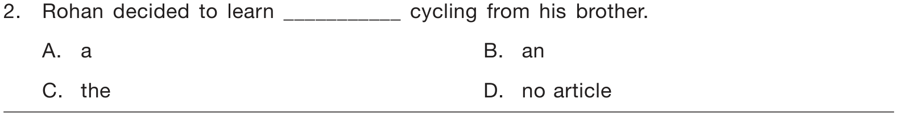
Rohan decided to learn ___________ cycling from his brother.
a
an
the
no article
The suitable option to be used is “no article”, as with gerunds (verb + ing), no article is used.
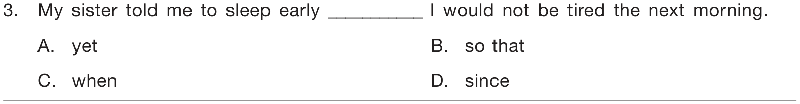
My sister told me to sleep early ___________ I would not be tired the next morning.
yet
so that
when
since
The suitable conjunction “so that” is to be used to show the effect or result of some action done in the sentence.
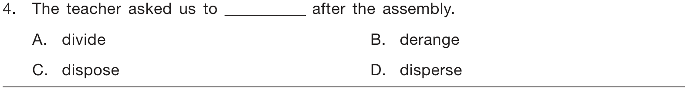
The teacher asked us to ___________ after the assembly.
divide
derange
dispose
disperse
The suitable verb “disperse” is to be used, which means “to separate and go in different directions” after the assembly in the sentence.
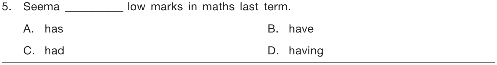
Seema ___________ low marks in maths last term.
has
have
had
having
The suitable verb form to be used is “had”, for the sentence is in the past tense, as indicated by the time phrase “last term” in the sentence.
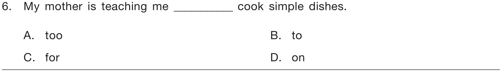
My mother is teaching me ___________ cook simple dishes.
too
to
for
on
The suitable preposition “to” is to be used before the base (first) form of the verb (cook) in the sentence.
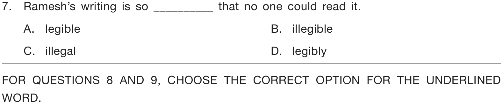
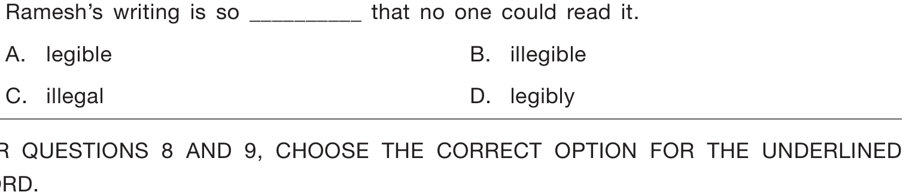
Option A
Option B
Option C
Option D
The suitable adjective “illegible” is to be used, which means “difficult or impossible to read”, to describe the subject “Ramesh’s writing” in the sentence.
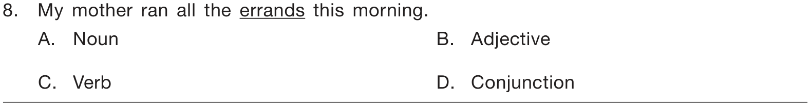
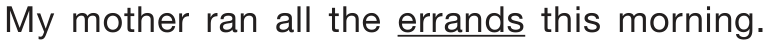
Noun
Adjective
Verb
Conjunction
The underlined word “errands” is a noun, which means “a short trip taken to do or get something” in the sentence.
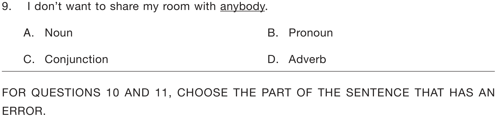
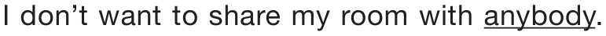
Noun
Pronoun
Conjunction
FOR QUESTIONS 10 AND 11, CHOOSE THE PART OF THE SENTENCE THAT HAS AN ERROR.
Adverb
The underlined word “anybody” is a pronoun, which means “any person; it does not matter who” in the sentence.
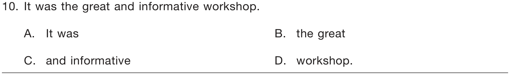
It was the great and informative workshop.
It was
the great
and informative
workshop.
The correct sentence is: It was a great and informative workshop.
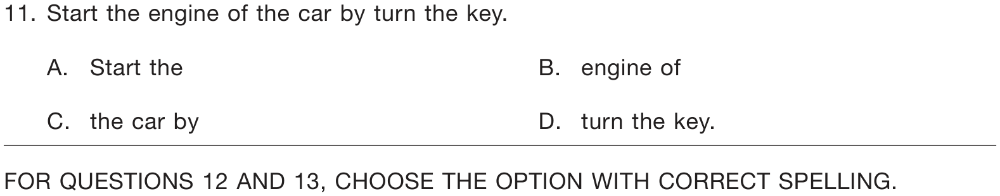
Start the engine of the car by turn the key.
Start the
engine of
the car by
FOR QUESTIONS 12 AND 13, CHOOSE THE OPTION WITH CORRECT SPELLING.
turn the key.
The correct sentence is: Start the engine of the car by turning the key.
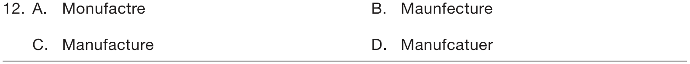
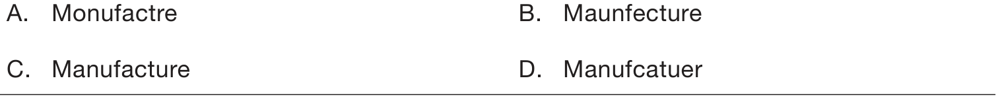
Option A
Option B
Option C
Option D
The correct spelling is “manufacture”, which means “to make something in large quantities using machines”.
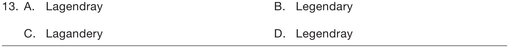
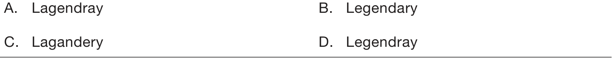
Option A
Option B
Option C
Option D
The correct spelling is “legendary”, which means “very famous and admired person”.
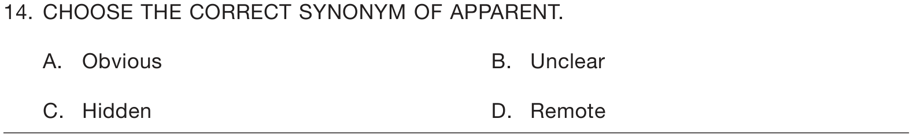
CHOOSE THE CORRECT SYNONYM OF APPARENT.
Obvious
Unclear
Hidden
Remote
The synonym of the word “apparent” is “obvious”, as they both mean “clear”.
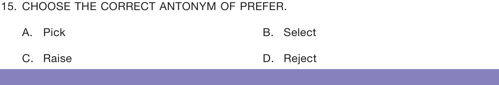
CHOOSE THE CORRECT ANTONYM OF PREFER.
Pick
Select
Raise
Reject
The antonym of the word “prefer” is “reject”. The word “prefer” means “to choose one thing rather than another”, and the word “reject” means “to refuse to accept”.
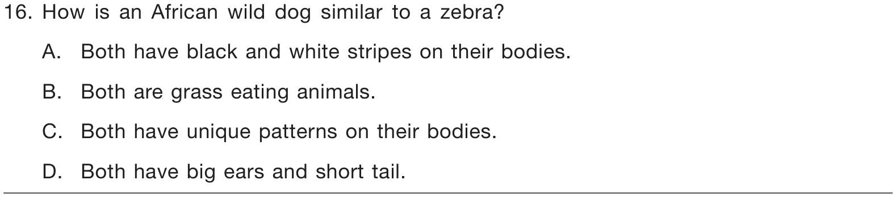
How is an African wild dog similar to a zebra?
Both have black and white stripes on their bodies.
Both are grass eating animals.
Both have unique patterns on their bodies.
Both have big ears and short tail.
The African wild dog and a zebra both have unique patterns on their bodies, which make them similar in a way.
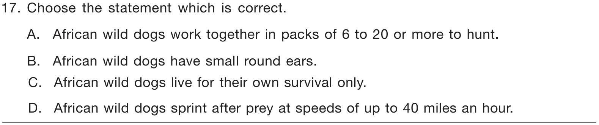
Choose the statement which is correct.
African wild dogs work together in packs of 6 to 20 or more to hunt.
African wild dogs have small round ears.
African wild dogs live for their own survival only.
African wild dogs sprint after prey at speeds of up to 40 miles an hour.
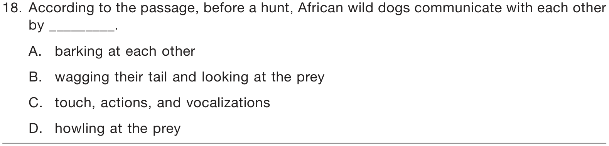
According to the passage, before a hunt, African wild dogs communicate with each other by _________.
barking at each other
wagging their tail and looking at the prey
touch, actions, and vocalizations
howling at the prey
According to the passage, before a hunt, African
wild dogs communicate with each other by touch, actions, and vocalizations.
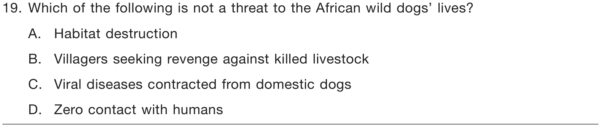
Which of the following is not a threat to the African wild dogs’ lives?
Habitat destruction
Villagers seeking revenge against killed livestock
Viral diseases contracted from domestic dogs
Zero contact with humans
Zero contact with humans is not a threat to the African wild dogs’ lives.
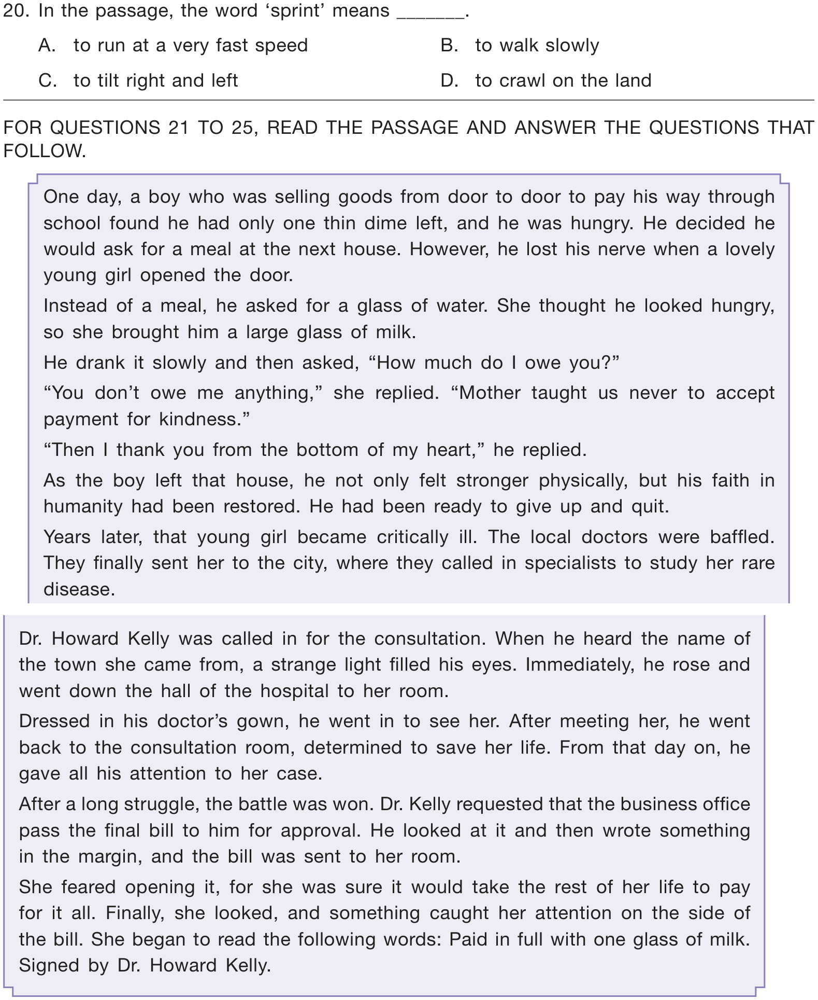
In the passage, the word ‘sprint’ means _______.
to run at a very fast speed
to walk slowly
to tilt right and left
FOR QUESTIONS 21 TO 25, READ THE PASSAGE AND ANSWER THE QUESTIONS THAT FOLLOW.
One day, a boy who was selling goods from door to door to pay his way through school found he had only one thin dime left, and he was hungry. He decided he would ask for a meal at the next house. However, he lost his nerve when a lovely young girl opened the door.
Instead of a meal, he asked for a glass of water. She thought he looked hungry, so she brought him a large glass of milk.
He drank it slowly and then asked, “How much do I owe you?”
“You don’t owe me anything,” she replied. “Mother taught us never to accept payment for kindness.”
“Then I thank you from the bottom of my heart,” he replied.
As the boy left that house, he not only felt stronger physically, but his faith in humanity had been restored. He had been ready to give up and quit.
Years later, that young girl became critically ill. The local doctors were baffled. They finally sent her to the city, where they called in specialists to study her rare disease.
Dr. Howard Kelly was called in for the consultation. When he heard the name of the town she came from, a strange light filled his eyes. Immediately, he rose and went down the hall of the hospital to her room.
Dressed in his doctor’s gown, he went in to see her. After meeting her, he went back to the consultation room, determined to save her life. From that day on, he gave all his attention to her case.
After a long struggle, the battle was won. Dr. Kelly requested that the business office pass the final bill to him for approval. He looked at it and then wrote something in the margin, and the bill was sent to her room.
She feared opening it, for she was sure it would take the rest of her life to pay for it all. Finally, she looked, and something caught her attention on the side of the bill. She began to read the following words: Paid in full with one glass of milk. Signed by Dr. Howard Kelly.
to crawl on the land
In the passage, the word “sprint” means “to run at a very fast speed”.
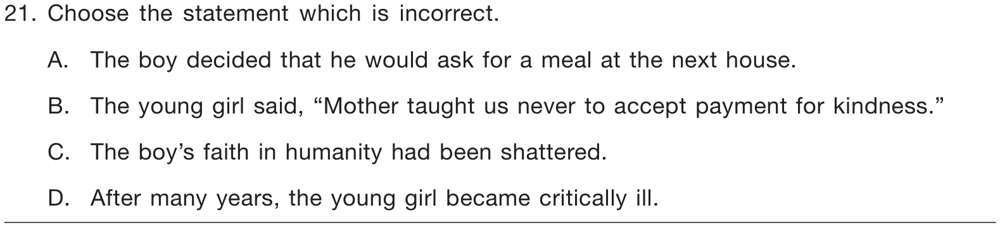
Choose the statement which is incorrect.
The boy decided that he would ask for a meal at the next house.
The young girl said, “Mother taught us never to accept payment for kindness.”
The boy’s faith in humanity had been shattered.
After many years, the young girl became critically ill.
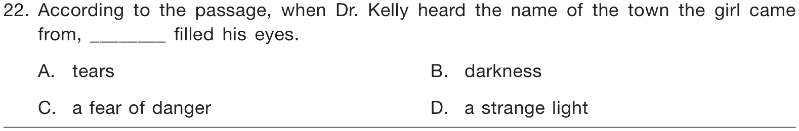
According to the passage, when Dr. Kelly heard the name of the town the girl came from, ________ filled his eyes.
tears
darkness
a fear of danger
a strange light
According to the passage, when Dr. Kelly heard the name of the town the girl came from, a strange light filled his eyes.
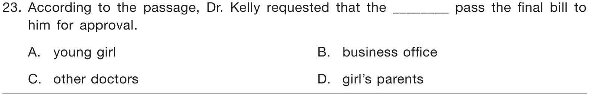
According to the passage, Dr. Kelly requested that the ________ pass the final bill to him for approval.
young girl
business office
other doctors
girl’s parents
According to the passage, Dr. Kelly requested that the business office pass the final bill to him for approval.
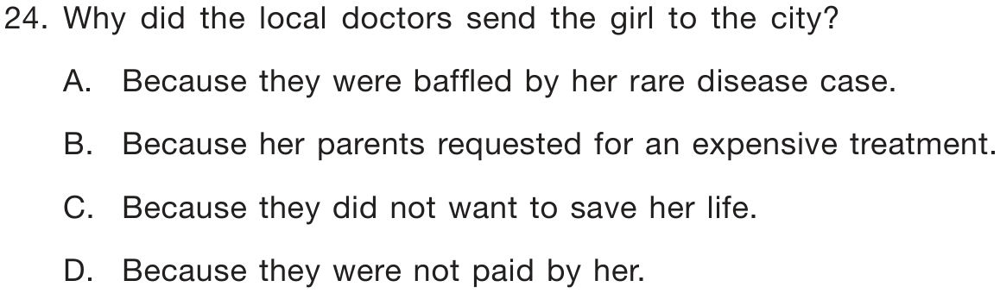
Why did the local doctors send the girl to the city?
Because they were baffled by her rare disease case.
Because her parents requested for an expensive treatment.
Because they did not want to save her life.
Because they were not paid by her.
The local doctors sent the girl to the city because they were baffled by her rare disease case.
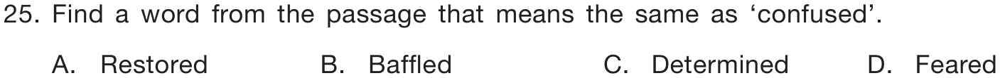
Find a word from the passage that means the same as ‘confused’.
Restored
Baffled
Determined
Feared
The word that means the same as “confused” in the passage is “baffled”.
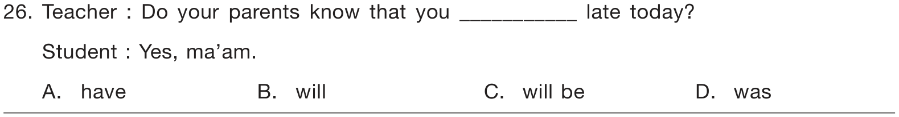
Teacher : Do your parents know that you ___________ late today?
Student : Yes, ma’am.
have
will
will be
was
The suitable verb “will be” is to be used to refer to actions that will be happening in the near future in the sentence.
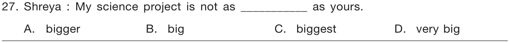
Shreya : My science project is not as ___________ as yours.
bigger
big
biggest
very big
The suitable positive adjective “big” is to be used, as there is no comparison made in the sentence.
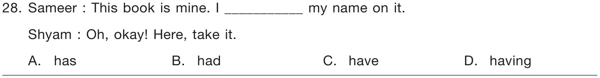
Sameer : This book is mine. I ___________ my name on it.
Shyam : Oh, okay! Here, take it.
has
had
have
having
The suitable linking verb “have” is to be used with the first person “I” in the present tense, which is denoted by the verb “is” in the sentence.
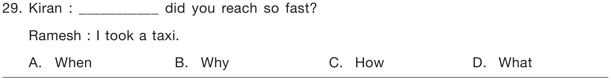
Kiran : ___________ did you reach so fast?
Ramesh : I took a taxi.
When
Why
How
What
The suitable interrogative adverb “how” is to be used to ask “in what way” in the sentence.
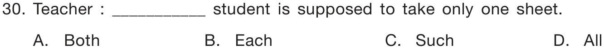
Teacher : ___________ student is supposed to take only one sheet.
Both
Each
Such
All
The distributive adjective “each” is to be used to refer to every person of a group, and it is used to describe the singular subject “student” in the sentence.
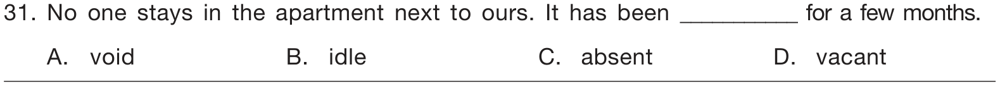
No one stays in the apartment next to ours. It has been ___________ for a few months.
void
idle
absent
vacant
The suitable adjective “vacant” is to be used, which means “empty”. It is used to describe the noun “apartment” in the sentence.
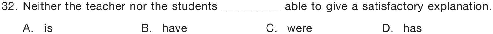
Neither the teacher nor the students __________ able to give a satisfactory explanation.
is
have
were
has
The suitable auxiliary verb “were” is to be used, as the verb will take the nearest subject (students) in the sentence.
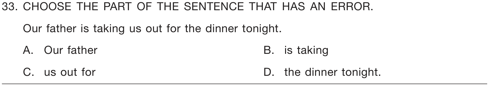
CHOOSE THE PART OF THE SENTENCE THAT HAS AN ERROR. Our father is taking us out for the dinner tonight.
Our father
is taking
us out for
the dinner tonight.
The correct sentence is: Our father is taking us out for dinner tonight.
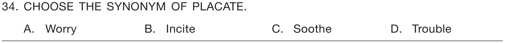
CHOOSE THE SYNONYM OF PLACATE.
Worry
Incite
Soothe
Trouble
The synonym of the word “placate” is “soothe”, as they both mean “to make somebody calmer or less upset”.
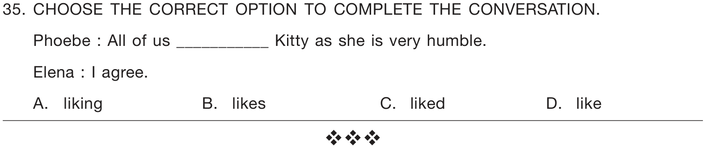
CHOOSE THE CORRECT OPTION TO COMPLETE THE CONVERSATION.
Phoebe : All of us ___________ Kitty as she is very humble.
Elena : I agree.
liking
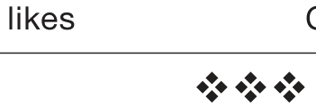
liked
like
The suitable verb to be used with the plural subject (all of us) is “like”, as the verb “is” indicates that the sentence is in the present tense.